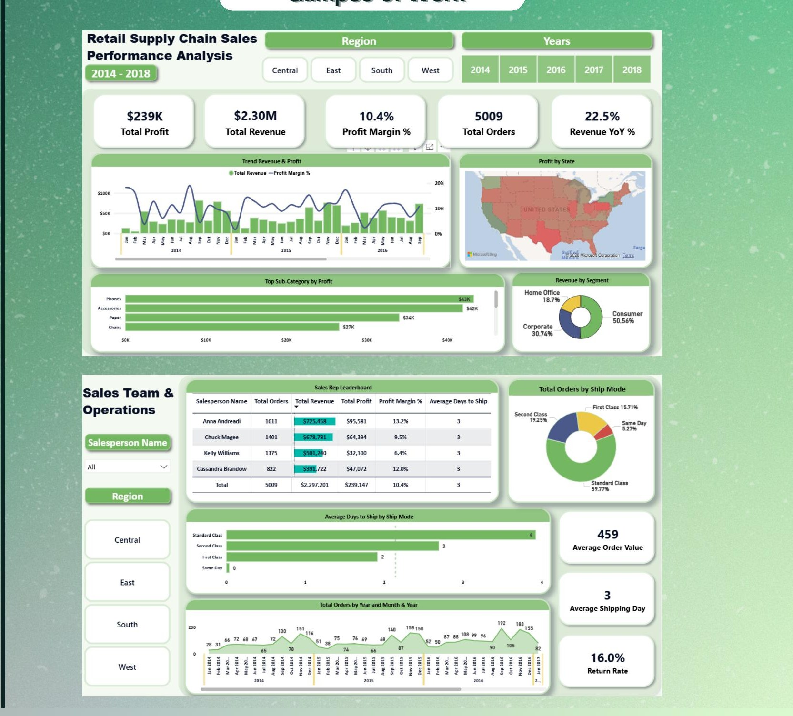

2026
Retail Supply Chain Sales Analysis
Analyzed four years of retail transactions (2014–2018, 5,009 orders) to find where the business was making and losing money. Built an interactive Power BI dashboard tracking revenue, margin, shipping performance, and sales-rep productivity.
- Technology products drove the most profit; heavier discounting consistently eroded margin.
- 16.0% return rate flagged as a priority area for the operations team.
- Standard Class was the dominant shipping method, averaging 3 days to deliver.
Power BI
MySQL
Kaggle Dataset